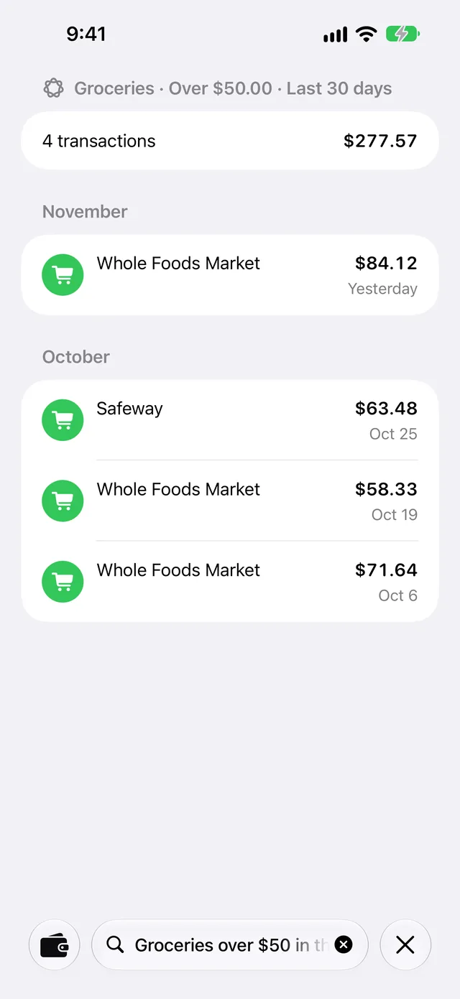
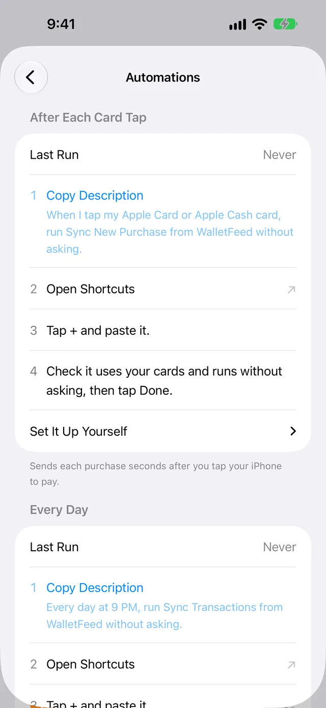

Siri and Shortcuts
You can use Siri and the Shortcuts app with WalletFeed on your iPhone. Siri can open Spending or Search in WalletFeed. Siri can also give your instruction to Ask Spending. The WalletFeed actions in Shortcuts can send your Apple Card transactions to your destinations or give them to a shortcut. They can also give a file of your transactions or the balances of your accounts to a shortcut.
Ask Spending, Show Spending, Search Transactions and the Ask Spending control operate without WalletFeed Pro. For the actions that send or give your transactions or balances, and for the Sync Transactions control, you must have WalletFeed Pro. WalletFeed Pro is a subscription with a 1-week free trial, or a one-time Lifetime purchase.
WalletFeed actions
WalletFeed gives these actions to Siri and the Shortcuts app:
| Action | Result | WalletFeed Pro |
|---|---|---|
| Ask Spending | WalletFeed opens Spending and shows the result for the instruction that you tell Siri. Without Apple Intelligence, WalletFeed opens Search with your instruction. | Not necessary |
| Show Spending | WalletFeed opens Spending. | Not necessary |
| Search Transactions | WalletFeed opens Search with the transactions that you tell Siri to find. | Not necessary |
| Sync Transactions | WalletFeed sends new and changed transactions to your destinations. WalletFeed does not open. | Necessary |
| Sync New Purchase | WalletFeed sends your last purchase after Wallet records it. WalletFeed does not open. This action is for a Transaction automation. | Necessary |
| Get Recent Card Transactions | WalletFeed gives your transactions from the last 7 days to the shortcut. You can change the number of days. | Necessary |
| Export Transactions | WalletFeed gives a CSV, OFX or QIF file of your transactions from a period to the shortcut. | Necessary |
| Get Balances | WalletFeed gives the balance of each Wallet account to the shortcut. | Necessary |
Use Siri with WalletFeed
- On your iPhone, start Siri.
- Tell Siri one of these instructions:
| Tell Siri | Result |
|---|---|
| "Ask WalletFeed", "Ask WalletFeed about my spending" or "Ask about my spending in WalletFeed" | You hear "What do you want to know?" You tell Siri your instruction. Then WalletFeed opens Spending and shows the result. |
| "Show my spending in WalletFeed" or "Open my spending in WalletFeed" | WalletFeed opens Spending. |
| "Search WalletFeed" or "Find a transaction in WalletFeed" | You hear "What are you looking for?" You tell Siri the transactions to find. Then WalletFeed opens Search. |
| "Sync WalletFeed" or "Send my card transactions with WalletFeed" | WalletFeed sends new and changed transactions to your destinations. |
| "Get card transactions from WalletFeed" | Siri receives your transactions from the last 7 days. |
When you tell Siri "Sync WalletFeed", WalletFeed does not open. After WalletFeed sends the transactions, Siri gives a message, for example "Changes sent: 3." Refer to Messages from WalletFeed actions.
Use Ask Spending with Siri
For this procedure, you must have Apple Intelligence on your iPhone. Refer to Before you start on the Ask Spending page.
-
On your iPhone, start Siri.
-
Tell Siri "Ask WalletFeed".
You hear "What do you want to know?"
-
Tell Siri your instruction, for example "dining this month vs last".
Siri opens WalletFeed. Spending shows your instruction in the Ask about your spending field, and then the result below the field.
Apple Intelligence reads your instruction on your iPhone, and WalletFeed calculates the result. For the items that your instruction can contain, refer to Write text that WalletFeed can read.
Without Apple Intelligence, Search opens with your instruction. Search then shows the results that you get when you type your instruction in the search field.
You can also start Ask Spending with the Action button or in a shortcut. In the Shortcuts app, the action shows "Ask Question". If you type your instruction in the action, the shortcut does not show "What do you want to know?"
Find transactions with Siri
-
On your iPhone, start Siri.
-
Tell Siri "Search WalletFeed".
You hear "What are you looking for?"
-
Tell Siri the transactions to find, for example "dining over $50 last month".
Search opens in WalletFeed and shows your instruction in the search field.

With Apple Intelligence, WalletFeed reads your instruction on your iPhone. Then Search shows the transactions and their total. Search with Apple Intelligence operates only on an iPhone that can use Apple Intelligence, and only when Apple Intelligence is active.
Without Apple Intelligence, Search shows the results that you get when you type your instruction in the search field. For more information, refer to Search.
The Sync Transactions control
WalletFeed has a control with the name Sync Transactions. You can add it to Control Center, the Lock Screen or the Action button. The control shows Sync.
When you use the control, WalletFeed opens. With WalletFeed Pro, WalletFeed then sends new and changed transactions to your destinations. While WalletFeed is open, your destinations receive changes in seconds.
The Ask Spending control
WalletFeed has a control with the name Ask Spending. You can add it to Control Center, the Lock Screen or the Action button. The control shows Ask Spending.
-
Use the Ask Spending control.
The control opens Spending in WalletFeed. Then the keyboard opens for the Ask about your spending field.
-
Type your text, for example
Groceries over $50. -
Tap Go on the keyboard.
Without Apple Intelligence, the control opens Spending without the Ask about your spending field.
Use your transactions in a shortcut
Get Recent Card Transactions gives your transactions to the subsequent action in a shortcut. For example, a shortcut can send them to Notes or Mail.
-
On your iPhone, open the Shortcuts app.
-
To make a new shortcut, tap +.
-
To change a shortcut that you have, tap ••• on the shortcut.
-
Tap Search Actions.
-
Type WalletFeed in the search field.
-
Tap Get Recent Card Transactions.
The action shows "Get card transactions from the last 7 days".
-
To change the number of days, tap 7.
-
Type the number of days.
-
Add the actions that use the transactions.
The action gives the transactions of the Wallet accounts that you select for WalletFeed. WalletFeed reads them from Wallet when the action operates. WalletFeed does not keep a copy.
The action gives this information for each transaction:
| Name in Shortcuts | Data |
|---|---|
| Merchant | The name of the merchant. If Wallet has no merchant name, Merchant has the description of the transaction. |
| Amount | The value of the transaction, with its currency. This value is more than zero for debits and for credits. |
| Date | The date of the transaction. |
| Category | The WalletFeed category, for example Groceries or Dining. |
| Status | The status of the transaction in Wallet, for example pending, authorized, booked (posted) or rejected (declined). |
| Credit | Credit shows if the transaction is a credit, for example a refund or a payment. |
Make a file of your transactions in a shortcut
The WalletFeed action Export Transactions gives a file of your transactions from a period to the subsequent action in a shortcut. For example, a shortcut can save the file in iCloud Drive or send it in an e-mail.
-
On your iPhone, open the Shortcuts app.
-
To make a new shortcut, tap +.
-
To change a shortcut that you have, tap ••• on the shortcut.
-
Tap Search Actions.
-
Type WalletFeed in the search field.
-
Tap Export Transactions.
The action shows "Export This Month as CSV".
-
To change the period, tap This Month, then select a period.
-
To change the format, tap CSV, then select OFX or QIF.
-
Add an action that uses the file, for example Save File.
The periods are the same as the periods of Export CSV. The formats are the formats of the Files destinations:
| Format | Transactions in the file |
|---|---|
| CSV | All the transactions of the period, also pending transactions. The file has the columns of Export CSV. |
| OFX | The transactions of the period that posted. Refer to OFX files. |
| QIF | The transactions of the period that posted. Refer to QIF files. |
The file does not include declined charges. If the period has no transactions, the file has no transactions. For example, a CSV file then has only the names of the columns.
The name of the file has the period in it:
| Period | Example of a file name |
|---|---|
| This Month or Last Month | WalletFeed 2026-10.csv |
| Last 90 Days | WalletFeed 2026-08-16 to 2026-11-14.csv |
| This Year | WalletFeed 2026.csv |
| All | WalletFeed Transactions.csv |
WalletFeed makes the file on your iPhone when the action operates. WalletFeed does not keep the file. The file goes only to the actions in your shortcut.
Get the balances of your accounts in a shortcut
The WalletFeed action Get Balances gives the balance of each Wallet account to the subsequent action in a shortcut. For example, a shortcut can add the balances to a note.
- On your iPhone, open the Shortcuts app.
- To make a new shortcut, tap +.
- To change a shortcut that you have, tap ••• on the shortcut.
- Tap Search Actions.
- Type WalletFeed in the search field.
- Tap Get Balances.
- Add the actions that use the balances.
The action gives the balances of the Wallet accounts that you select for WalletFeed. WalletFeed reads them from Wallet when the action operates. WalletFeed does not keep a copy. The action gives this information for each account:
| Name in Shortcuts | Data |
|---|---|
| Account | The name of the Wallet account, for example Apple Card. |
| Account ID | The ID of the Wallet account. |
| Account Type | liability for Apple Card, or asset for Apple Cash and Savings. |
| Currency | The currency code, for example USD. |
| Booked Balance | The balance from the posted transactions, with its currency. This value is zero or more than zero. Booked Direction gives the sign. |
| Booked Direction | credit or debit. A zero balance is credit. |
| Booked Date | The date and time when Wallet calculated the booked balance. |
| Available Balance | For Apple Cash and Savings, the balance that also includes the pending transactions. For Apple Card, the available credit. It has its currency. Available Direction gives the sign. |
| Available Direction | credit or debit. A zero balance is credit. |
| Available Date | The date and time when Wallet calculated the available balance. |
| Credit Limit | The credit limit of Apple Card. |
| Card Balance | The amount that you owe on Apple Card, as Wallet shows it, with the pending transactions. It is the credit limit minus the available credit. |
| Available Credit | The credit that you can use on Apple Card. This value is zero or more than zero. |
| Minimum Payment | The minimum payment for Apple Card. |
| Payment Due Date | The date when the Apple Card payment is due. |
| Overdue Amount | The amount of an Apple Card payment that is overdue. |
For Apple Cash and Savings, credit is a positive balance and debit is a negative balance. For the Apple Card booked balance, debit is a balance that you owe and credit is a balance in your favor. Apple does not document the direction of the Apple Card available credit. If Wallet does not give a booked or available balance, the three items of that balance are empty.
WalletFeed gives the items from Credit Limit to Overdue Amount only for Apple Card, and only if Wallet gives them. If Apple Card is in credit, Card Balance is less than zero.
When Sample Data is on, Export Transactions gives a file of the sample transactions, and Get Balances gives no balances.
Send transactions with an automation
An automation in the Shortcuts app can send your transactions while WalletFeed is not open. iOS does not let apps make automations. Thus, you make the automation in Shortcuts, with the steps that WalletFeed shows.
If you do not have WalletFeed Pro, Settings does not show the Sync section. Refer to WalletFeed Pro.
-
On your iPhone, open WalletFeed.
-
Tap Settings (the gear button) at the top of the screen.
-
In the Sync section, tap Automations.

-
Do the steps in the After Each Card Tap section.

-
If the screen also shows Every Day, do the steps in the Every Day section.
The steps on the screen are different on iOS 26 and iOS 27. On iOS 27, when Apple Intelligence is active, step 1 is Copy Description. You paste the copied text in Shortcuts. Then you make sure that the automation is correct.
On iOS 27, a different procedure is below the steps. It is in Set It Up Yourself when Apple Intelligence is active, or in Describe It Instead when Apple Intelligence is not active. For the steps of each procedure, refer to Run a shortcut after each Apple Card purchase.
The Automations screen can show these automations:
| Automation | WalletFeed action | Result |
|---|---|---|
| After Each Card Tap | Sync New Purchase, in a Transaction automation | WalletFeed sends each purchase some seconds after you make it with your iPhone. |
| Every Day | Sync Transactions, in a Time of Day automation | WalletFeed sends the changes that After Each Card Tap does not send, for example purchases on the internet and posted charges. |
The Automations screen shows Every Day only if Background Sync is off or Sample Data is on. When Background Sync is on and WalletFeed is not open, iOS starts WalletFeed approximately 1 hour or less after a change in Wallet. Thus, an After Each Card Tap automation is not necessary, but you can make one. Refer to Background Sync.
If you made an Every Day automation, it continues to operate when the Automations screen does not show Every Day.
After Sync New Purchase starts, it waits a maximum of 18 seconds for Wallet to record the purchase. If Wallet records the purchase after this time, WalletFeed sends the purchase when it sends changes again.
Last Run and the Automations value
On the Automations screen, the section of each automation starts with Last Run. Last Run shows the last time that the action operated, for example "2 hr. ago". If the action did not operate, Last Run shows Never. For Every Day, Last Run also changes when you use Sync Transactions with Siri or in a different shortcut.
The Automations value in Settings shows if each automation operated in its period. The period of After Each Card Tap is the last 14 days, and the period of Every Day is the last 3 days. The value is one of these:
| Value | Condition |
|---|---|
| On | Each automation on the Automations screen operated in its period. |
| 1 of 2 | One of the two automations operated in its period. |
| Set Up | No automation operated in its period, and Background Sync is off or Sample Data is on. |
| Off | Background Sync is on, Sample Data is off, and After Each Card Tap did not operate in its period. |
iOS does not tell WalletFeed about your automations. You change or delete an automation in the Shortcuts app.
Messages from WalletFeed actions
When Sync Transactions or Sync New Purchase stops, the action gives a message. Siri shows or speaks the message. In an automation, Shortcuts can show the message as a notification. The message is one of these:
| Message | Condition |
|---|---|
| "Changes sent: 3." | WalletFeed sent 3 changes. The number is the total for all your destinations. |
| "Nothing new to send." | Sync Transactions did not find a new change. |
| "Nothing new yet." | Sync New Purchase did not find a new change. |
| "Changes sent: 3. One destination needs attention." | WalletFeed cannot send to one destination. If more destinations have this problem, the message gives the number of destinations. |
| "Sync requires WalletFeed Pro." | WalletFeed Pro is not active on this iPhone. |
| "Open WalletFeed and allow Wallet access." | WalletFeed cannot read your Wallet accounts. |
| "Add a destination in WalletFeed first." | WalletFeed has no destination that is on. |
Without WalletFeed Pro, Get Recent Card Transactions, Export Transactions and Get Balances show "This action requires WalletFeed Pro."
Your data in Siri and Shortcuts
When you use Ask Spending, Show Spending or Search Transactions with Siri, Siri opens WalletFeed. Siri does not receive your transactions, the totals on Spending or the result of Ask Spending. For Ask Spending and Search Transactions, Siri receives only your instruction. WalletFeed keeps your instruction in memory only, and does not save it.
Get Recent Card Transactions gives your transactions to the shortcut or to Siri. Export Transactions gives a file of your transactions, and Get Balances gives your balances, to the shortcut. These two actions give no message to Siri. The subsequent actions in the shortcut can send the transactions, the file or the balances to different apps.
On your iPhone, WalletFeed records the last time that Sync Transactions operated and the last time that Sync New Purchase operated. WalletFeed uses these times to show Last Run on the Automations screen and the Automations value in Settings.
If there is a problem
If Last Run shows Never
The automation did not start the WalletFeed action on this iPhone.
-
On your iPhone, open the Shortcuts app.
-
Tap Automation.
On iOS 27, the Shortcuts app shows the shortcuts that have an automation trigger.
-
Find the automation.
-
If you cannot find the automation, do the steps in Send transactions with an automation again.
-
Open the automation.
-
Make sure that the automation starts Sync New Purchase or Sync Transactions.
-
On iOS 26, make sure that the automation uses Run Immediately.
-
On iOS 27, tap the arrow adjacent to the trigger at the top of the shortcut.
-
On iOS 27, make sure that Confirm Before Run is off.
-
On iOS 27, tap the information button ⓘ › Privacy.
-
On iOS 27, make sure that Allow Running When Locked is on.
If the message is "Sync requires WalletFeed Pro."
WalletFeed Pro is not active on this iPhone. When Get Recent Card Transactions, Export Transactions or Get Balances shows "This action requires WalletFeed Pro.", the cause is the same.
- Open WalletFeed.
- Tap Settings (the gear button) at the top of the screen.
- In the Subscription section, tap the WalletFeed Pro row that shows Upgrade.
- If you have a plan, tap Restore Purchases below the plans.
- If you do not have a plan, get WalletFeed Pro. Refer to Get WalletFeed Pro.
If the message is "Open WalletFeed and allow Wallet access."
WalletFeed cannot read your Wallet accounts.
- Open WalletFeed.
- Tap Transactions.
- If WalletFeed shows No Cards, do the steps in Select the accounts from WalletFeed.
- If WalletFeed shows Wallet Access Off, do the steps in If WalletFeed shows Wallet Access Off.
If the message is "Add a destination in WalletFeed first."
WalletFeed has no destination that is on.
- Open WalletFeed.
- Tap Destinations.
- If there is no destination, do the steps in Add a destination.
- If a destination shows Off, tap the destination.
- Set Enabled to on.
If the message is "Changes sent: 3. One destination needs attention."
WalletFeed cannot send to one or more destinations.
-
Open WalletFeed.
-
Tap Destinations.
-
Find the destination that shows a message below its name, for example "Authentication failed".

-
Find the message in If there is a problem on the Destinations page.
-
Do the steps for that message.
Related
Updated November 14, 2026